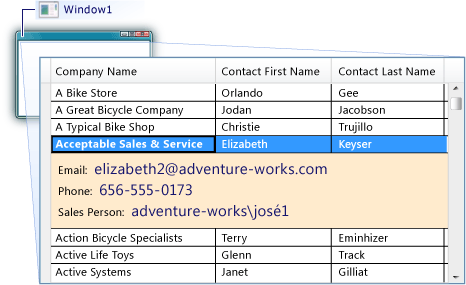

Практическое руководство. Добавление сведений о строках в элемент управления DataGrid
При использовании DataGrid элемента управления, можно настраивать представление данных, добавив раздел сведений о строке. Добавление раздела сведений о строке позволяет группировать некоторые данные в шаблон, который при необходимости видима или свернута. Например, можно добавить сведения о строке в DataGrid , представляющие только сводку данных для каждой строки в DataGrid, но предоставляет дополнительные поля данных, когда пользователь выбирает строку. Необходимо задать шаблон для раздела сведений о строке в RowDetailsTemplate свойство. Ниже показан пример раздела сведений о строке.

Определение шаблона сведений о строке, либо как встроенный XAML или как ресурс. В следующих процедурах показаны оба подхода. Шаблон данных, который добавляется в качестве ресурса можно использовать в проекте без повторного создания шаблона. Шаблон данных, в который добавляется встроенный XAML доступен только из элемента управления, где он определен.
Отображение сведений о строке с помощью встроенного XAML
Создание DataGrid , отображающий данные из источника данных.
В элементе DataGrid добавьте элемент RowDetailsTemplate.
Создание DataTemplate , определяющий внешний вид раздела сведений о строке.
В следующем XAML показан DataGrid и как определить RowDetailsTemplate встроенный. DataGrid Отображает три значения в каждой строке и три дополнительные значения при выборе строки.
<Window x:Class="WpfApplication1.MainWindow" xmlns="http://schemas.microsoft.com/winfx/2006/xaml/presentation" xmlns:x="http://schemas.microsoft.com/winfx/2006/xaml" Title="MainWindow" Height="350" Width="525" Loaded="Window_Loaded"> <Grid> <DataGrid Name="dataGrid1" IsReadOnly="True" AutoGenerateColumns="False" > <DataGrid.Columns> <DataGridTextColumn Header="Company Name" Binding="{Binding CompanyName}"></DataGridTextColumn> <DataGridTextColumn Header="Contact First Name" Binding="{Binding FirstName}"></DataGridTextColumn> <DataGridTextColumn Header="Contact Last Name" Binding="{Binding LastName}"></DataGridTextColumn> </DataGrid.Columns> <DataGrid.RowDetailsTemplate> <DataTemplate> <Border BorderThickness="0" Background="BlanchedAlmond" Padding="10"> <StackPanel Orientation="Vertical"> <StackPanel Orientation="Horizontal"> <TextBlock FontSize="12" Text="Email: " VerticalAlignment="Center" /> <TextBlock FontSize="16" Foreground="MidnightBlue" Text="{Binding EmailAddress}" VerticalAlignment="Center" /> </StackPanel> <StackPanel Orientation="Horizontal"> <TextBlock FontSize="12" Text="Phone: " VerticalAlignment="Center" /> <TextBlock FontSize="16" Foreground="MidnightBlue" Text="{Binding Phone}" VerticalAlignment="Center" /> </StackPanel> <StackPanel Orientation="Horizontal"> <TextBlock FontSize="12" Text="Sales Person: " VerticalAlignment="Center" /> <TextBlock FontSize="16" Foreground="MidnightBlue" Text="{Binding SalesPerson}" VerticalAlignment="Center" /> </StackPanel> </StackPanel> </Border> </DataTemplate> </DataGrid.RowDetailsTemplate> </DataGrid> </Grid> </Window>В следующем коде показано запрос, который используется для выбора данных, который отображается в DataGrid. В этом примере запрос выбирает данные из сущности, содержащей сведения о клиенте.
private void Window_Loaded(object sender, RoutedEventArgs e) { AdventureWorksLT2008Entities advenWorksEntities = new AdventureWorksLT2008Entities(); ObjectQuery<Customer> customers = advenWorksEntities.Customers; var query = from customer in customers orderby customer.CompanyName select new { customer.LastName, customer.FirstName, customer.CompanyName, customer.Title, customer.EmailAddress, customer.Phone, customer.SalesPerson }; dataGrid1.ItemsSource = query.ToList(); }
Отображение сведений о строке с помощью ресурса
Создание DataGrid , отображающий данные из источника данных.
Добавить Resources элемент к корневому элементу, такие как Window управления или Page , или же добавьте Resources элемент Application класс в файле App.xaml (или файл Application.xaml).
В элементе ресурсов создайте DataTemplate , определяющий внешний вид раздела сведений о строке.
В следующем XAML показан RowDetailsTemplate определенные в Application класса.
<Application.Resources> <DataTemplate x:Key="CustomerDetail"> <Border BorderThickness="0" Background="BlanchedAlmond" Padding="10"> <StackPanel Orientation="Vertical"> <StackPanel Orientation="Horizontal"> <TextBlock FontSize="12" Text="Email: " VerticalAlignment="Center" /> <TextBlock FontSize="16" Foreground="MidnightBlue" Text="{Binding EmailAddress}" VerticalAlignment="Center" /> </StackPanel> <StackPanel Orientation="Horizontal"> <TextBlock FontSize="12" Text="Phone: " VerticalAlignment="Center" /> <TextBlock FontSize="16" Foreground="MidnightBlue" Text="{Binding Phone}" VerticalAlignment="Center" /> </StackPanel> <StackPanel Orientation="Horizontal"> <TextBlock FontSize="12" Text="Sales Person: " VerticalAlignment="Center" /> <TextBlock FontSize="16" Foreground="MidnightBlue" Text="{Binding SalesPerson}" VerticalAlignment="Center" /> </StackPanel> </StackPanel> </Border> </DataTemplate> </Application.Resources>На DataTemplate, задайте директивы x: Key значение, которое однозначно определяет шаблон данных.
В DataGrid элемент, наборе RowDetailsTemplate свойство ресурс, определенный в предыдущих шагах. Назначьте универсальный код ресурса, как статический ресурс.
В следующем XAML показан RowDetailsTemplate свойство присвоен ресурс из предыдущего примера.
<DataGrid Name="dataGrid1" IsReadOnly="True" AutoGenerateColumns="False" RowDetailsTemplate="{StaticResource CustomerDetail}" > <DataGrid.Columns> <DataGridTextColumn Header="Company Name" Binding="{Binding CompanyName}"></DataGridTextColumn> <DataGridTextColumn Header="Contact First Name" Binding="{Binding FirstName}"></DataGridTextColumn> <DataGridTextColumn Header="Contact Last Name" Binding="{Binding LastName}"></DataGridTextColumn> </DataGrid.Columns> </DataGrid>
Чтобы задать видимость и предотвратить горизонтальная прокрутка сведений о строке
При необходимости задайте RowDetailsVisibilityMode свойства DataGridRowDetailsVisibilityMode значение.
По умолчанию, присваивается значение VisibleWhenSelected. Можно задать значение Visible для отображения сведений для всех строк или Collapsed Чтобы скрыть сведения для всех строк.
При необходимости задайте AreRowDetailsFrozen свойства
trueво избежание строки раздел горизонтальная прокрутка сведений о.